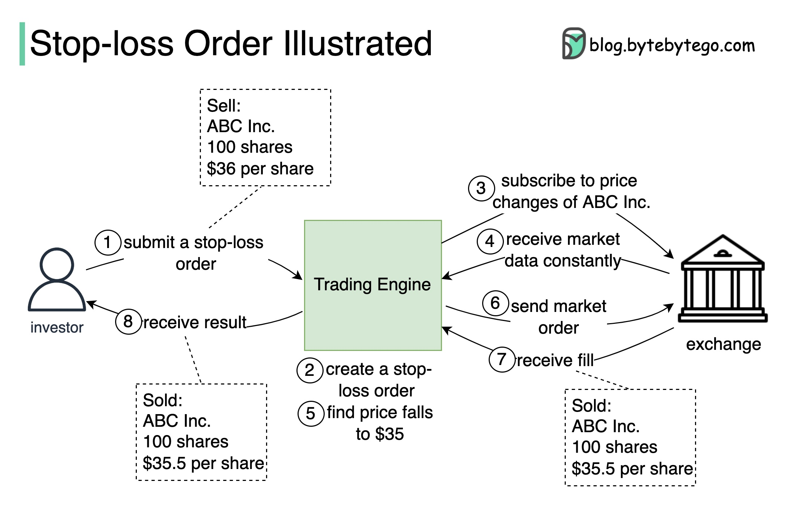

A stop-loss order allows us to set a price called the ‘stop-loss price’ of a stock or a share. This is a value the investor chooses, at which they will sell it to minimize their loss on the investment.
When the price of the stock hits the stop-loss point, the stop-loss order is triggered and it turns into a market order to sell at the current market price.
For example, let’s say an investor has 100 shares in ABC Inc., and the current price is $40 per share. The investor wants to sell the stock if the market price falls to or below $36, in order to limit their loss.
The diagram above illustrates how a stop-loss order is executed by a trading system.
The investor submits a stop-loss order to the trading system with 100 shares, to sell for $36.
Upon receiving the order request, the trading engine creates the stop-loss order.
The trading engine subscribes to the market data of ABC Inc. from the exchange and monitors its real-time market price.
If the trading engine detects that the market price of ABC Inc. falls to, say, $35, it immediately creates a market order and then submits it to the exchange to sell the 100 shares for the current best market price.
The order is filled (i.e. matched to the best buy orders in the market,) usually instantaneously. Then the trading engine receives from the exchange a ‘fill report’ stating the shares have been sold for, say, $35.5 per share.
The trading system notifies the investor that the 100 shares have been sold for $35.5 per share.